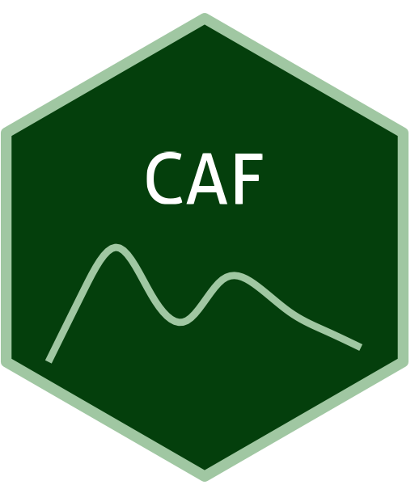

CAF

CAF
Soil spectral library for Central Africa (CAF)
1,000+ samples
first release (v1)
CC-BY
Map

Database access
Data originally provided by:
- Contact: Laura Summerauer
- Email: laura.summerauer@usys.ethz.ch
- Original source: https://doi.org/10.5281/zenodo.6786666
Available files
| Type | Filename | Link |
|---|---|---|
| MIR spectra — CSV (gzip) | ossl_mir_v1.3.csv.gz |
Download |
| MIR spectra — Parquet | ossl_mir_v1.3.parquet |
Download |
| Soil lab measurements — CSV (gzip) | ossl_soillab_v1.3.csv.gz |
Download |
| Soil lab measurements — Parquet | ossl_soillab_v1.3.parquet |
Download |
| Soil site metadata — CSV (gzip) | ossl_soilsite_v1.3.csv.gz |
Download |
| Soil site metadata — Parquet | ossl_soilsite_v1.3.parquet |
Download |
Soil laboratory information
Summary statistics for soil properties in this dataset, sourced from the ossl-imports README.
| skim_variable | n_missing | mean | sd | p0 | p25 | p50 | p75 | p100 |
|---|---|---|---|---|---|---|---|---|
| c.tot_usda.a622_w.pct | 184 | 1.98 | 2.51 | 0.08 | 0.89 | 1.38 | 2.31 | 45.54 |
| n.tot_usda.a623_w.pct | 168 | 0.16 | 0.18 | 0.01 | 0.07 | 0.11 | 0.18 | 2.92 |
| ph.h2o_usda.a268_index | 1317 | 5.10 | 0.94 | 3.32 | 4.51 | 4.84 | 5.36 | 8.56 |
| clay.tot_usda.a334_w.pct | 1262 | 34.63 | 21.73 | 1.04 | 12.41 | 34.88 | 51.59 | 86.88 |
| silt.tot_usda.c62_w.pct | 1309 | 23.85 | 14.97 | 4.00 | 13.48 | 19.28 | 29.87 | 74.75 |
| sand.tot_usda.c60_w.pct | 1309 | 42.30 | 23.77 | 1.30 | 21.12 | 40.50 | 61.12 | 89.90 |
| al.ext_aquaregia_g.kg | 1128 | 25.20 | 24.69 | 0.16 | 7.94 | 12.37 | 36.24 | 121.32 |
| fe.ext_aquaregia_g.kg | 1128 | 38.84 | 39.55 | 0.34 | 10.15 | 20.13 | 59.62 | 352.66 |
| ca.ext_aquaregia_mg.kg | 1128 | 634.26 | 1352.25 | 0.00 | 52.50 | 186.94 | 589.29 | 19922.26 |
| mg.ext_aquaregia_mg.kg | 1128 | 800.40 | 1425.40 | 9.27 | 79.37 | 141.16 | 836.50 | 9500.41 |
| k.ext_aquaregia_mg.kg | 1128 | 616.41 | 1020.57 | 7.96 | 77.21 | 163.31 | 795.00 | 8073.54 |
| mn.ext_aquaregia_mg.kg | 1128 | 480.73 | 934.36 | 2.23 | 30.09 | 64.16 | 455.98 | 6468.45 |
| na.ext_aquaregia_mg.kg | 1128 | 69.57 | 128.62 | 0.00 | 4.99 | 13.99 | 71.72 | 1213.29 |
| p.ext_aquaregia_mg.kg | 1128 | 534.89 | 773.33 | 13.90 | 130.72 | 214.20 | 580.34 | 6679.17 |
Soil site information
- coordinates precision: precise, region
- sampling depth: various
- geography: landuse
MIR
- Acquisition mode: Not available
- Intensity: absorbance
- Original range: 600-7500
- Standardized range: 600-4000
- Instrument: VERTEX 70 FT-IR
- Manufacturer: Bruker Optics GmbH (Germany)
- Scan accessory: Not available
- Sample preparation: Ground < 50 μm
- Additional info: A gold coated reflectance standard (Infragold NIR-MIR Reflectance Coating, Labsphere) was used as a background material
MIR plot